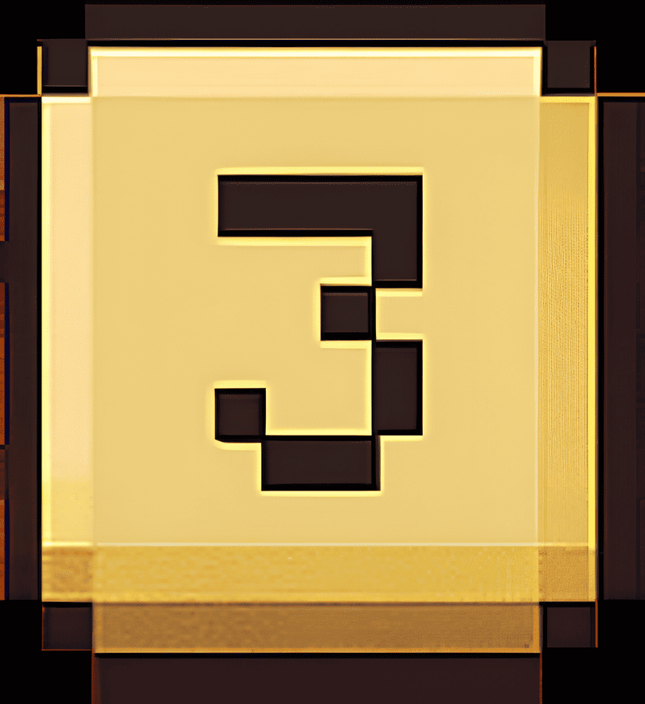
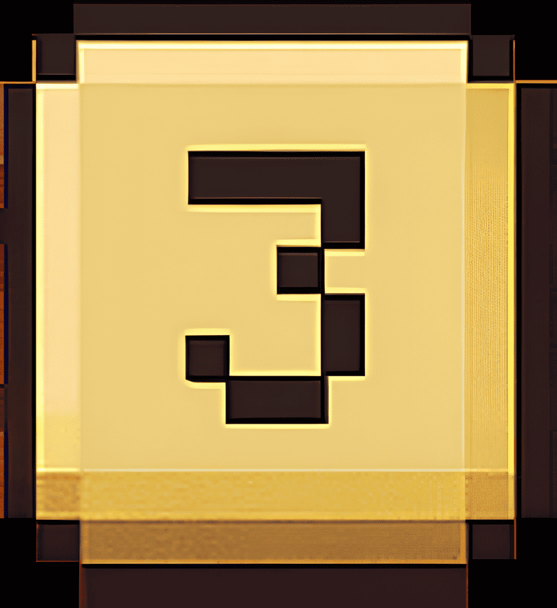
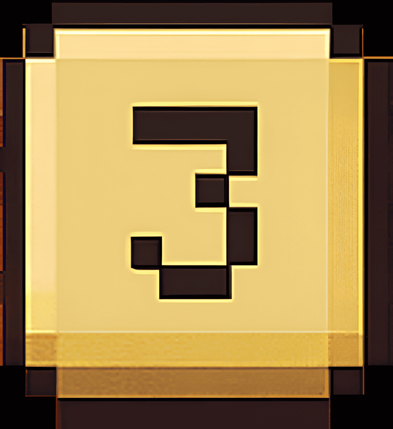
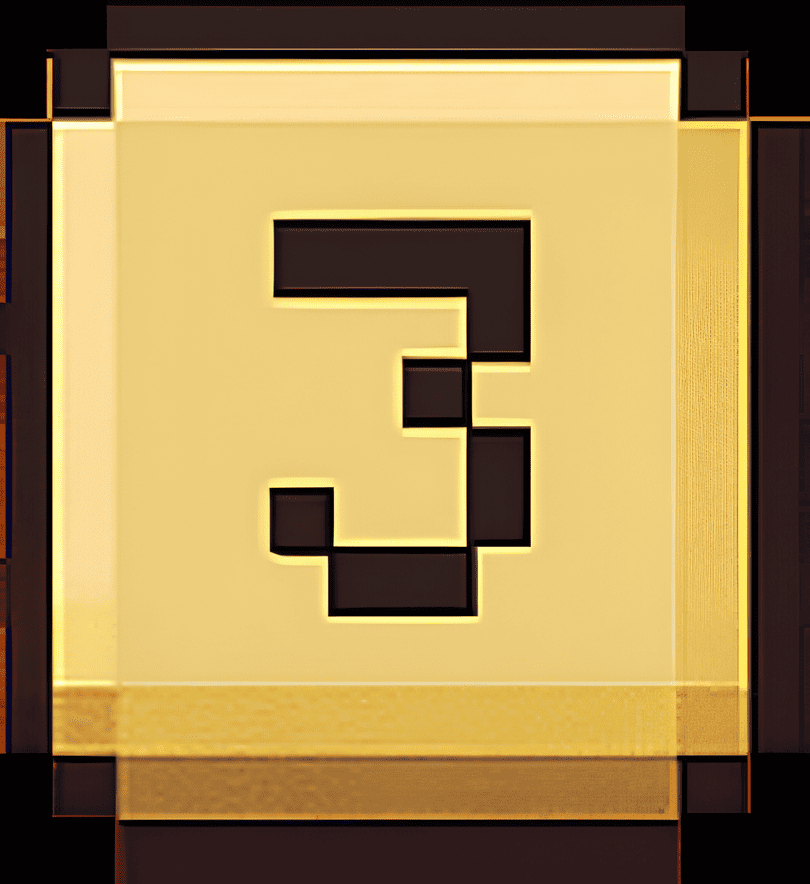
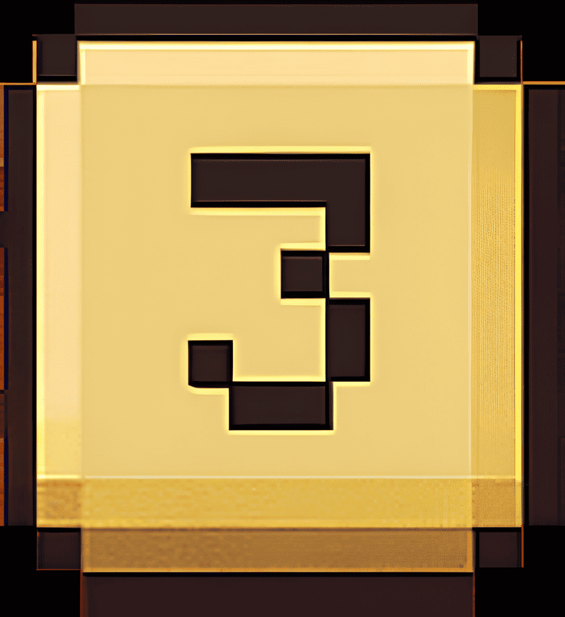

레벨: 1
점수: 0
제한시간: 10초
Tutorial
Start
Pause

Pause 중
Continue
Restart
Restart
개미수열은 ‘보는 대로 말하는 수열’이에요.
ex) 1을 보면 → "1이 1개 있어요" → 11
ex) 11을 보면 → "1이 2개 있어요" → 12
ex) 1121을 보면 → "1이 2개, 2가 1개, 1이 1개 있어요" → 122111
닫기

 


